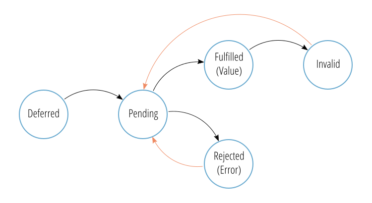

Introduction
Data in modern applications comes from asynchoronous data sources, such as AJAX requests, websockets and offline data stores. But consuming async data in MVVM world can be hard. This article aims to explain why and how to gracefully deal with async data, and to establish some practical conventions of representing async data in the viewmodel.
Examples are given in Vue.js, but the concept is applicable to any MVVM framework (Angular, React, etc.).
Why worry at all
Why do we use async data sources in the first place? I will not go into details, but the answer is blocking. Without being async, application would behave just like classic console applications, completely blocking the interface until the command is executed.
So how to deal with async data? The simplest aproach is to wait until all the data is ready, and only then display it. While being simple, this effectively blocks UI, rendering it unresponsive and defeating the purpose of async. Another problem is that failed data fetching might render the application unusable.
@TODO: demo
But we can do better than that, if we account for all the “phases” the data goes through:

[@TODO: FMS instead of a list]
- Data fetching has been started and has not finished yet
- Data fetching has finished with
2a. Success
2b. Failure
And sometimes we can do even better, if the data can be loaded progressively. More on that later.
Now lets talk about templates. We want templates to be performant and testable. We want them to contain the minimal ammount of logic. The best way to achieve these goals is to treat templates as pure functions that accept plain data. So we need a way to represent phases of async data with plain data.
Trivial case
If your data fetching is fast (under 100ms) and never fails, and never returns undefiend, then you can use a simple pattern of representing the “no data” phase with undefined, and consuming it by conditionally rendering the template, or rendering two conditional branches.
[!@TODO: FSM with two phases]
Practical applications: @TODO
Example: @TODO
Convention
To represent more then two phases we need to store some state along the value. The best way to do this is to use a “struct” pattern, where the value is wrapped into an object with additional fields, encoding the phase the value is in. All the cases below follow this pattern:
1 | { |
The cases described bellow are not exclusive, and can be combined together.
Use case: Data fetching takes some time
[!@TODO: FSM with four phases]
Pattern:
- Use the semantics of promises
- boolean
pendingflag - boolean
fulfilledflag- if
true, thenvalueis present
- if
- boolean
rejectedflag- if
true, thenerroris present
- if
- boolean
- Consume by having three conditional branches
In case when the data fetch can not fail, this pattern can be replaced with a simpler one:
- Use boolean
pendingflag to represent whether the data is ready to be shown - Consume by having two conditional branches
Practical applications: @TODO
Example: @TODO
Use case: Data can be invalidated
Pattern:
- Use boolean
invalidflag
Practical applications: @TODO
Example: @TODO
Use case: Data can be deferred (known to exist, but not fetched yet)
Pattern:
- Use boolean
deferredflag
Practical applications: @TODO
Example: @TODO